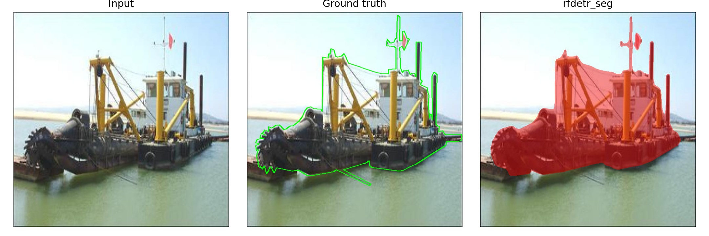
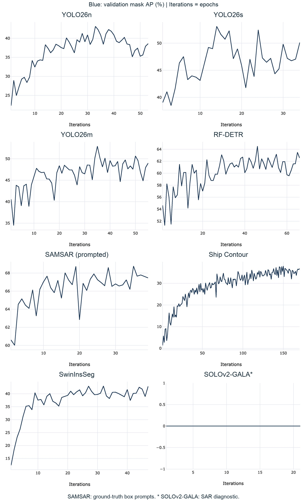
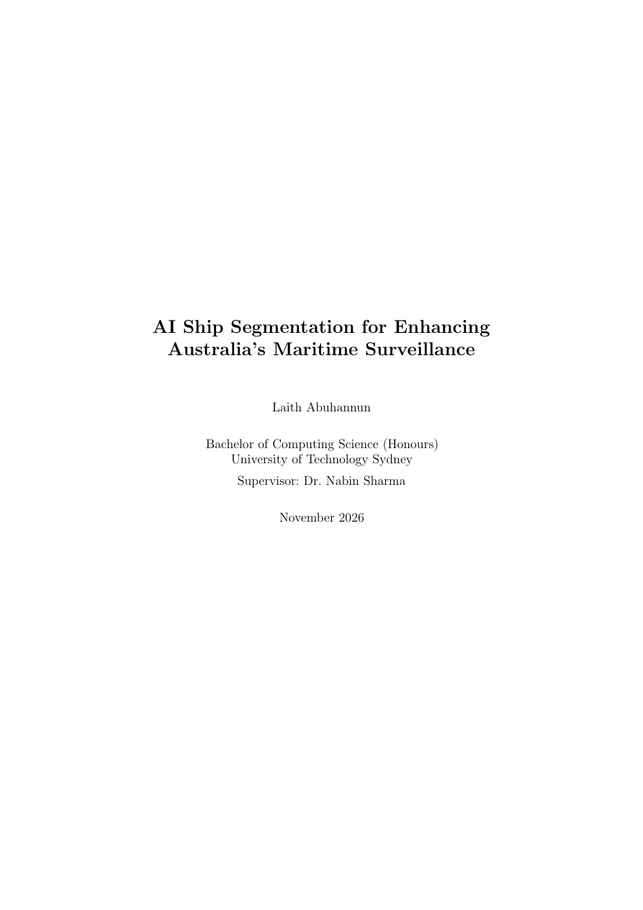

Accuracy and speed trade off.
On the same visible-light A100 GPU, RF-DETR achieved 70.76% mask AP at 7.64 FPS; YOLO26m reached 58.35% at 25.02 FPS.
Honours research · UTS · 2026
AI ship segmentation for enhancing Australia's maritime surveillance.
A comparative study of six model families across radar and visible-light imagery, examining accuracy, speed and the cases where models fail.

01 / Research question
AIS and LRIT provide vessel-reporting information. Imagery offers a separate observation of the scene. This study asks which segmentation implementations offer useful accuracy and computational trade-offs, and what further evidence would be needed for integration research.
The contribution is an organised comparison of existing architectures: data preparation, training and validation, final evaluation, external transfer and failure analysis. It does not evaluate a live AMSA system or introduce a new model architecture.
02 / Selected final results
RF-DETR led SSDD and visible light.
YOLO26m led HRSID.
Values are held-out test measurements.

Loading the selected results…
| Model | Mask AP50:95 | AP50 | Precision | Recall | F1 | FPS |
|---|
Accuracy values are percentages. Precision, recall and F1 use each model's validation-selected threshold. Some SAR FPS results used different GPUs and input settings; they are not a controlled hardware comparison. Download the underlying data ↗
On the same visible-light A100 GPU, RF-DETR achieved 70.76% mask AP at 7.64 FPS; YOLO26m reached 58.35% at 25.02 FPS.
SAMSAR receives ground-truth boxes. Its strong mask scores are reported separately because the target locations are supplied.
On 500 ship-containing LS-SSD images, the highest external box recall was 23.54%. Strong in-domain scores did not establish reliable transfer.
03 / Visual evidence
Shared-image comparisons show differences in mask extent and missed targets. A single image illustrates an outcome; it does not establish a dataset-wide failure rate.


On HRSID image 1, YOLO26m displays no masks at its selected threshold despite two annotated ships. RF-DETR displays two masks. Their correctness still depends on overlap with the annotations.
Native ClearML exports from the selected runs. Expand a dataset to inspect loss and validation mask AP.




The original ClearML UI labels the horizontal axis “Iterations”; epoch values were supplied by the pipeline. Loss scales differ between models. SAMSAR uses ground-truth prompts; SAR SOLOv2 curves are unsuccessful diagnostic runs. Click a curve image for a larger view.

04 / Full research report
The complete honours report brings together the research background, model implementations, experimental protocol, quantitative results, training behaviour and failure analysis.
Public copy: student number removed; submitted text retained. This is an honours report, not a claim of peer-reviewed publication.
If your browser cannot display the PDF, use the open or download links above.
05 / Inspect the implementation
Colab entrypoints for preparation, training and evaluation, with retained outputs where available.
02 / SOURCEHistorical source versions and recorded settings, with their provenance and implementation limits.
03 / REPRODUCTIONInspect metrics without a GPU, then follow the environment and data requirements for training.